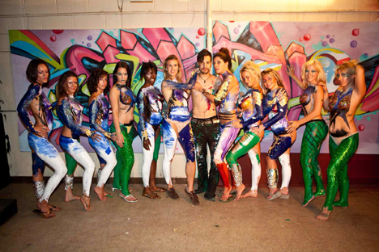

Zander
and Norell
Designer Jacob Alexander Figueroa went by the names of Jacob Alexander and did work as Virtual Warrior Ink  vw|NK Agency, Karnak Gallery, the artist Xander / Zander, and is perhaps best known for his body painting and mixed media artworks.
Zander was an influential body painter for over a decade, from 2000 - 2010 and beyond.
vw|NK Agency, Karnak Gallery, the artist Xander / Zander, and is perhaps best known for his body painting and mixed media artworks.
Zander was an influential body painter for over a decade, from 2000 - 2010 and beyond.
 Some of the artists Jacob Alexander body painted for and with include world renowned DJ Paul Van Dyk
Some of the artists Jacob Alexander body painted for and with include world renowned DJ Paul Van Dyk  renowned DJ Benny Benassi at Epic Nightclub in downtown Minneapolis
renowned DJ Benny Benassi at Epic Nightclub in downtown Minneapolis  and countless concerts, events, festivals, conventions, and private parties.
and countless concerts, events, festivals, conventions, and private parties.
Zander and Norell had met under the most artistic of terms, with him being his rock star body painter self, and Norell modeling as one of his many human canvases during an art exhibition titled “High Seas Heaven”.

Norell was transformed into a mermaid that night, one of her childhood dreams; and they have worked alongside each other ever since, dating as far back as that first night working together in August of 2010.
 They have co-produced several creative projects since coming together, including the Edible Art Series, where Norell photographed Zander provocatively with other models. Some of the photographs later were exhibited at FIMA in Montreal to over 70,000 art lovers with fine artist Gulay Alpay and celebrity fashion designer Emre Erturk.
They have co-produced several creative projects since coming together, including the Edible Art Series, where Norell photographed Zander provocatively with other models. Some of the photographs later were exhibited at FIMA in Montreal to over 70,000 art lovers with fine artist Gulay Alpay and celebrity fashion designer Emre Erturk.
Individually, they are strong. Together, they are dynamite. Zander and Norell, the power duo in multimedia artistry.
Norell was always pursuing her dreams of singing in some form or another.
 She was active in choir throughout her schooling and collegiate career, including a choir outside of school under the direction of songstress Emily Colay with her choir Cantera.
She performed regular open mic events and frequented karaoke hotspots, often having the DJs following her on her way out, encouraging her to come back often.
She was active in choir throughout her schooling and collegiate career, including a choir outside of school under the direction of songstress Emily Colay with her choir Cantera.
She performed regular open mic events and frequented karaoke hotspots, often having the DJs following her on her way out, encouraging her to come back often.
Furthermore, pursuing modeling as a creative outlet was how she came to meet Zander, when she agreed to model for an event on a whim.
Since a long time model and muse to Jacob Alexander, Norell coproduced alongside Zander the X Fashion Show in 2011,
Sexapalooza at the Convention Center in downtown Minneapolis, MN,
 and Sexapalooza at the Oregon Convention Center in Portland, Oregon,
and Sexapalooza at the Oregon Convention Center in Portland, Oregon,
 to assisting, modeling, and photographing Zander's live body painting on stage with musical acts R2D2, Deadmaus, and other headliners at Summerset Music and Camping Festival 2012 in Somerset, WI.
to assisting, modeling, and photographing Zander's live body painting on stage with musical acts R2D2, Deadmaus, and other headliners at Summerset Music and Camping Festival 2012 in Somerset, WI.  the Twin Cities Pride Festival in both 2013 and 2014,
the Twin Cities Pride Festival in both 2013 and 2014,

 to name a few productions.
to name a few productions.
Together Zander and Norell produced the X Fashion Show Zander in Minneapolis of 2011.
Back then, Norell was only a solo artist dreaming of making music professionally, singing a cappella on stage, debuting her very first original song, “Adaptation”, along with a couple of songs in tribute to Amy Winehouse, who had passed around the time.

Norell also helped in getting several merchandise items featuring artworks by Jacob Alexander on display and for sale in the Minneapolis Skyway in downtown Minneapolis, MN.


Norell and Zander have been known to do spontaneous performance art in public places
 and even in busy streets with cars and passerby.
and even in busy streets with cars and passerby.


It should come with little surprise, then - with Norell's love for singing, and Zander's history of violin and musical ventures - that the two would some day spontaneously jam and birth a band in St. Paul, MN.

Check out The Band Famous Official Website!
Get TBF's Debut Album Last Words FREE!

The syngery had between Zander and Norell combined with their first meeting with Terrance Schubring, could do nothing but make the band famous.
The Band Famous, or TBF for short, features Norell as singer, lyricist, and coproducer, and Zander as multi-instrumentalist and producer.

They have had many accomplishments and much recognition despite only officially performing as band in the public eye one time, at their debut app release party at the Gay 90s in downtown Minneapolis.
Both Zander and Norell were regular models on the scene in the Twin Cities, and Suzann Beck, an artist who worked with Norell later featured an oil portrait she painted of the soulful singer.
Zander and Norell moved to NYC where they spent a year. During that time span Norell's portfolio, which Zander nearly built single-handedly, directing the styling of her hair and wardrobe in many photo shoots, caught the eye of celebrity hair stylist Ted Gibson.
While living in NYC, TBF was garnering support in the Midwest, including from Twin Cities very own Atmosphere, who even personally tweeted out the band's Kickstarter project, when they had attempted to crowdsource to help with the completion of making their native iPhone App "The Band Famous" available cross-platform to the Android Google Play Store, as well as finishing their 2nd album and other exciting projects underway. Author Jay Gabler at Minnesota Public Radio and 89.3FM The Current also did an exceptional feature on the band.

WeekOnLaRadio, broadcasting to all of New York, as well as to Mexico and the Dominican Republic, were inspired by and showed wonderful hospitality to The Band Famous.
Five-Time-Grammy-Winning Artist BJ Thomas even downloaded "The Band Famous" and left a review on the iPhone App Store, under alias "Raindrops Mann", calling The Band Famous his new favorite music.
After almost going on The Voice following an audition at the Javitz Center in Manhattan, Norell and Zander decided they would try a more organic route, and also try life on the west coast for size, especially after connecting with actor and comedian Tom Green, who invited the band to perform on his Webovision show in Los Angeles.